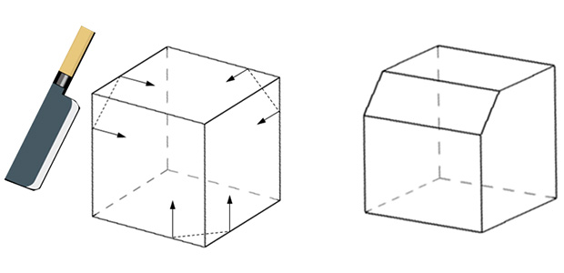
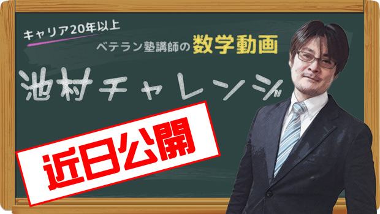
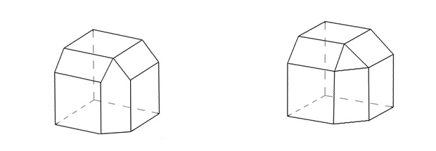
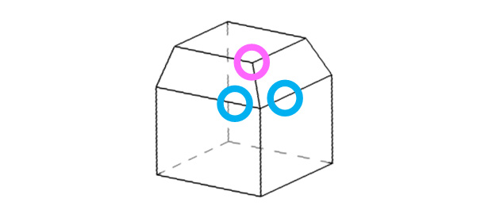
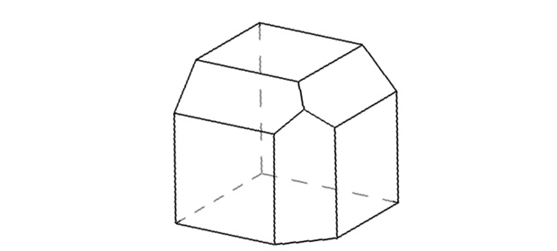

イメージ力を鍛える
数学動画を配信する予定が、撮ってみたらイケてない…。
というワケで方向性を再検討して撮り直しとなりました。
仕方ないので今月はこのブログで私がちょっと考えた問題を。
しっかり考えたい人は一番最後の解答を見ないように、慎重にスクロールして下さいね。

※スクロール対策用CM

想像だけでなく理屈も大事
想像できましたか？
豆腐あたりを実際に切ってみれば話は早いのですが、それでは反則になってしまうので、実験は後でのお楽しみにしておきましょう。
もし、下図のように考えた人がいたら、惜しい！

どちらも「平面と平面が交わると直線になる」という点では間違えてはいません。
例えば本を開くと左ページと右ページの境目が直線になりますよね。そういう意味です。
しかし左図は何か変な感じがします。
それは「対称性」が失われているからでしょう。
平等な３方向から削っているのに、下から削った部分の面積だけが一人だけ幅を利かせています。
でも本来ならば、120°ずつ回転させても全く同じ様子に見えないとおかしいのです。それが対称ということです。
右の図は、対称性は保たれています。
ただし、このように三つ巴になった部分が正三角形になっていると、実はちょっと余計に削ってしまっていることになります。
さてさて、「そもそもまったく想像つかん…」という人も多いでしょう。
なかなか考えづらいのは、３方向から同時に削った様子をいきなり想像しようとするからです。
そこで順を追って考えてみます。
まずは２回切断したときの形を考えてみるわけです。
それがこれ。

これなら想像しやすいでしょう。
そして注目ポイントは赤く囲んだ部分。
つまりその様子こそが、その左右２方向から削ったときに見える姿なのです。
ここでフィニッシュとして下から削ります。
そのとき青く囲んだ部分に、やはり同じような姿が見られるはずです。それが対称性というやつなのです。
よって正解は下の図になります。

いかがでしたでしょうか。
「ホントにそうなるの？」という人は豆腐や消しゴムを切ってみましょう。
ぜひご家庭でも話題にしてみて下さい。